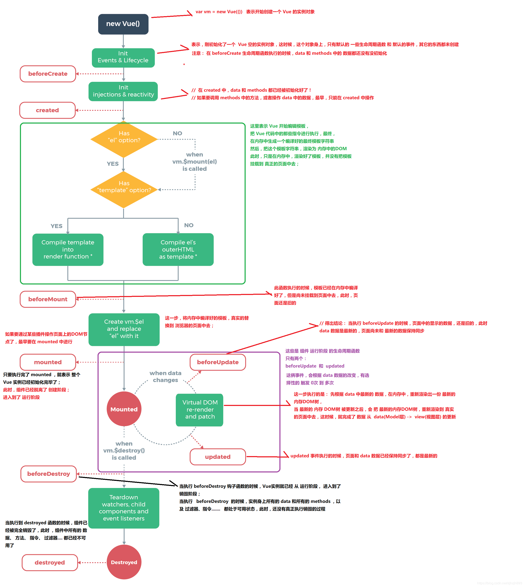

Vue 生命周期
前言
本人平时学习及收集内容，欢迎参入一起讨论。
内容
一、生命周期是什么
Vue 实例有一个完整的生命周期，也就是从开始创建、初始化数据、编译模版、挂载 Dom——>渲染、更新——>渲染、卸载等一系列过程，我们称这是 Vue 的生命周期。
二、各个生命周期的作用
| 参数 | 参数解释 |
|---|---|
| beforeCreate | 组件实例被创建之初，组件的属性生效之前 |
| created | 组件实例已经完全创建，属性也绑定，但真实 dom 还没有生成，$el还不可用 |
| beforeMount | 在挂载开始之前被调用：相关的 render 函数首次被调用 |
| mounted | el 被新创建的 vm.$el 替换，并挂载到实例上去之后调用该钩子 |
| beforUpdate | 组件数据更新之前调用，发生在虚拟 DOM 打补丁之前 |
| update | 组件数据更新之后 |
| activited | keep-alive 专属，组件被激活时调用 |
| deadctivated | keep-alive 专属，组件被销毁时调用 |
| beforeDestory | 组件销毁前调用 |
| destoryed | 组件销毁后调用 |
三、生命周期示意图

参考资料
联系作者
平凡世界，贵在坚持。